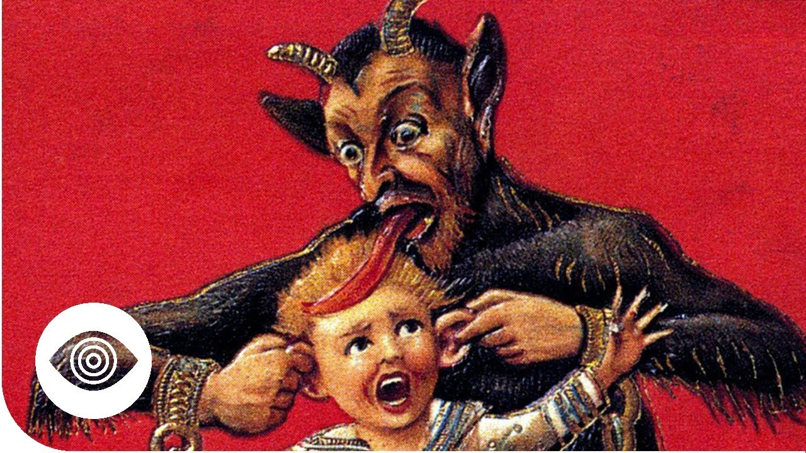

Christmas is a holiday common throughout Europe, where family comes together to celebrate
Christmas is a celebration of the birth of Jesus. This holiday is celecrated on the 25th of December. Family and friends come together to eat and exchange gifts.
The Christmas Tree is actually a German tradition.
Krampus is Germany's evil version of Santa, who stalks and punishes naughty children